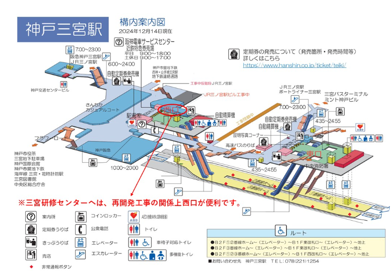
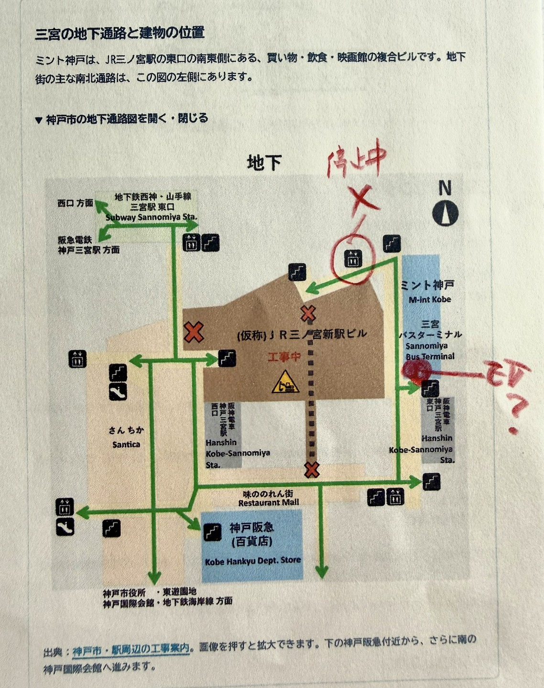
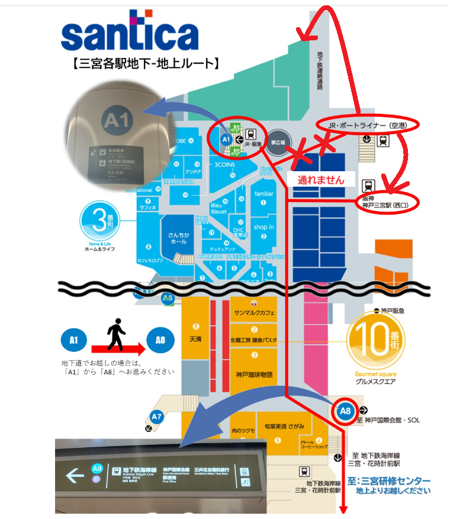

研修会場への道案内（地上ルート以外）
研修会場への道案内（地上ルート以外）
この案内の使い方
この案内では、到着駅または到着地から、地下街（さんちか）を通り、国際会館で地上へ出て、三宮研修センターに至る道順を記しています。
工事のため、地下街から三宮研修センターに直接には行けません。
※新神戸駅からポートループバスに乗る場合は、地下街を通らず三宮研修センターまで直結です。
道順は、後に出てくる「01 到着した駅を選ぶ」で到着した駅別に確認することができます。
参考：三宮各駅の車いすで通れる改札・EVの位置
車いすで駅構内を移動する際、どの改札・エレベーターが通れるかを事前に確認できる外部サイトとして、「三宮駅 乗り換え のバリアフリー情報」（バリアフリーマップ）が参考になります。
※撮影時期が不明のため、工事による現状との差異はご了承ください。
三宮研修センター
神戸市中央区八幡通4丁目2-12
カサベラFRⅡビル（神戸市役所の東正面）
会場は6階です。
01到着した駅を選ぶ
この案内はすべてエレベーターを使う経路で書いています。エレベーターの近くに階段やエスカレーターがある場合は、同じ経路で進める可能性が高いので参考にしてください（必ず同じ経路とは限りません）。
※このプロトタイプは JR三ノ宮、阪神 神戸三宮、阪急 神戸三宮、新神戸・地下鉄 三宮、神戸空港（ポートライナー）・他市バス の5経路で確認できます。海岸線 三宮・花時計前からのご案内は用意していません。
02阪神 神戸三宮から、さんちかへ
-
01
ホームからエレベーターで中央口へ
3階ホームのエレベーターで1階へ降り、中央口の改札を出ます。西口は通りません。
-
02
中央口を出て、さんちかへ向かう
中央改札を出たらすぐ北（右）へ進み、建物を出ます。出たところの左手にエレベーターと階段があります。エレベーターで地下へ降り、地下鉄三宮駅側から「海岸線・神戸国際会館」の案内に従って南へ進みます。
いったん北へ回るのは、駅南側の工事エリアを避けるためです。

-
01
ホームからエレベーターで西改札（地下1階）へ
地下2階ホームから、西口側のエレベーターで地下1階へ上がります。エレベーターを出てまっすぐ進むと、駅長室前の西改札があります。
三宮研修センターへは、再開発工事の関係で西改札（西口）が便利です。東改札から出ると、地上・地下ともに工事の迂回が必要になります。
図で確認する：阪神 神戸三宮の構内図

出典：三宮研修センターが公開している阪神 神戸三宮駅 構内案内図（三宮研修センター「2025年10月より地下道工事による通行止めについて」より）。より詳しい図は 阪神 神戸三宮 公式構内図（PDF） でも確認できます。
-
02
西改札を出て左、阪急百貨店前を右へ（さんちかに入る）
西改札を出て左へ進みます。少し進んだ神戸阪急（百貨店）の前で右へ曲がると、さんちかのメイン通路（南向き）に入ります。ここが下の共通案内でいうA1付近です。
「神戸阪急」は百貨店の名前で、阪急電車の駅ではありません。地下1階のまま進みます。
-
01
ホームからエレベーターで東改札（2階）へ
阪急 神戸三宮駅のホームは3階です。ホーム上のエレベーターで2階へ降り、東改札を出ます。
-
02
東改札を出て左前方奥のEVで地下へ、地下鉄側からさんちかに入る
東改札を出て、左前方のかなり奥にある地下へ続くエレベーターで地下へ降ります。降りた先は市営地下鉄 西神・山手線 三宮駅側です。地下では東へ進むと、南向きのさんちかへ続くコンコースがあります。ここが下の共通案内でいうA1付近です。
図で確認する：改札からさんちかまでの向き

公式構内図・神戸市の通路図をもとに、曲がり方と位置関係を簡略化しています。
改札階から直接地下に降りるルート（車いすの方おすすめ）
少しわかりにくいかもしれませんが、阪急の東改札を出て南（右）に行って交通センタービルのエレベーターで2階から直接地下（B1・阪神西口側）に降りることもできます。車いすの方はこちらがおすすめです。
地下に降りた先の経路（交通センタービル → 阪神西口改札付近 → さんちかへ）は、冒頭で紹介した 「三宮駅 乗り換え のバリアフリー情報」（「阪急→阪神」の項）で写真付きで確認できます。
新幹線で新神戸についた方へ
三宮までは市営地下鉄 西神・山手線で1駅（西神中央・名谷方面）です。三宮駅で降りたあとは、下のカード01から進んでください。
なお、地下街を通らず会場前まで直行する連節バス「ポートループ」もあります。新神戸駅前から乗り換えなしで「市役所・東遊園地前」まで約16分、そこが会場正面です。時刻表・ルートは神姫バス・ポートループ（外部サイト）でご確認ください。
-
01
ホームからエレベーターで東改札（地下1階）へ
地下2階または地下3階のホームから、東改札側のエレベーターで地下1階へ上がります。新神戸から到着する名谷・西神中央方面のホームからも、エレベーターで地下1階の東改札に上がれます。
-
02
東改札を出て、さんちかへ向かう
東改札を出て、「阪神電車・地下鉄海岸線・三宮・花時計前」方面へ進みます。東出口3の地上行きエレベーターには上がらず、地下の南北通路を南へ進むと、さんちかにつながります。ここが下の共通案内でいうA1付近です。
神戸空港からのポートライナーで三宮駅に着いた方の案内です。ポートライナー三宮駅の時刻表は神戸新交通・ポートライナー 三宮駅時刻表（外部サイト）で確認できます（平日・土日祝で別）。
-
01
神戸空港からポートライナーで三宮駅へ
神戸空港駅からポートライナーの三宮行きに乗ります。三宮駅が終点です。
神戸空港側の詳しいアクセスは神戸空港 公式サイト（外部サイト）で確認できます。
-
02
三宮駅の改札を出て、ミント神戸2階の南端EVへ
ホーム中央付近のエレベーターで3階から2階へ降り、改札を出て「阪神（東口）方面」の出口へ向かいます。
改札を出てすぐの「ポートライナー三宮駅 南エレベーター」は停止中（2026年9月4日〜11月30日）のため使えません。代わりにミント神戸のエレベーターを使います。
ミント神戸（三宮バスターミナル）の2階に入り、南へ進むと奥にエレベーターが3基あります。一番奥（南端）のエレベーターを使います。目印は途中のUnited Arrowsなどの店舗です。
-
03
ミント神戸南端のEVで地下1階へ
ミント神戸南端のエレベーターで地下1階へ降ります。
図で確認する：ミント神戸周辺の地下と、使うEV・停止中のEV

出典：神戸市・駅周辺の工事案内の図に、実際に歩いてくださった方が停止中のエレベーターと使うエレベーターを書き加えたものです。
-
04
地下から味ののれん街を通ってさんちかへ
地下1階に降りたら、阪神東口側から「味ののれん街」を西へ進みます。さんちかの南北通路につながり、ここが下の共通案内でいうA1付近です。

他市からのバスで三宮に着いた方へ
バスは会社や路線によって降りる場所が違います。ミント神戸（三宮バスターミナル）に着いた場合は、上のカード03から進めます。
神姫バスの神戸三宮バスターミナル（JR三ノ宮駅の東口から徒歩5分ほどの別の場所）や、伊丹空港からのリムジンバスで神戸阪急百貨店の北西付近に着く場合など、降り場は複数あるため、この案内では個々のバスの経路までは扱いません。降り場と時刻は、利用するバス会社の公式で確認してください。
神戸阪急百貨店に着いた場合は、地下に降りてから神戸阪急前の通路を通り、さんちかのメイン通路（南向き）に入ります。ここが下の共通案内でいうA1付近です。
03さんちかから、三宮研修センターへ（全駅共通）
ここから先はどの駅から来ても同じ道順です。
-
01
さんちかを南へ、神戸国際会館の地下入口（A8）へ
さんちかのメイン通路を南に進み、突き当たりで左へ折れて、南端の「A8／至 神戸国際会館・SOL」方面へ向かいます。
研修センターの最寄り出口だったC5は、工事のため使えません（三宮研修センターの通行止め案内）。この案内では、A8を経由して神戸国際会館の地下入口へ入る経路でご案内します。
図で確認する：三宮各駅からさんちかを通ってA8へ

出典：三宮研修センター「2025年10月より地下道工事による通行止めについて」。到着した駅によってA1に出る位置は異なりますが、A1からA8までの道順は共通です。
-
02
神戸国際会館から1階へ
A8を出た先に神戸国際会館の地下入口があります。館内には案内表示があり、西エレベーター（スターバックスの左側）か、エスカレーターでも1階へ上がれます。
-
03
交差点を南へ渡り、フラワーロード東側を進む
1階に出たら、フラワーロード沿いに南（市役所・海側）へ。国際会館前交差点を南へ渡り、道路の東側を進みます。市バス「市役所前」を通過し、ポートループ「市役所・東遊園地前 PL32」が会場正面の目印です。
図で確認する：地上の位置図
位置関係を簡略化した図（縮尺なし）。バス停間の距離は表していません。